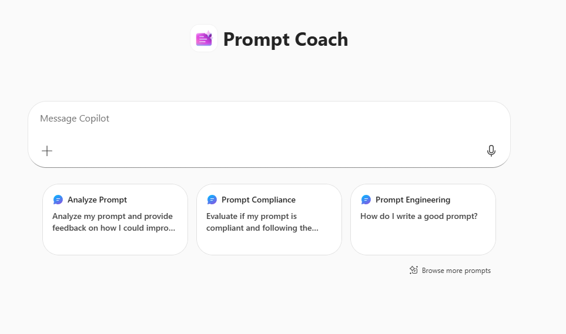
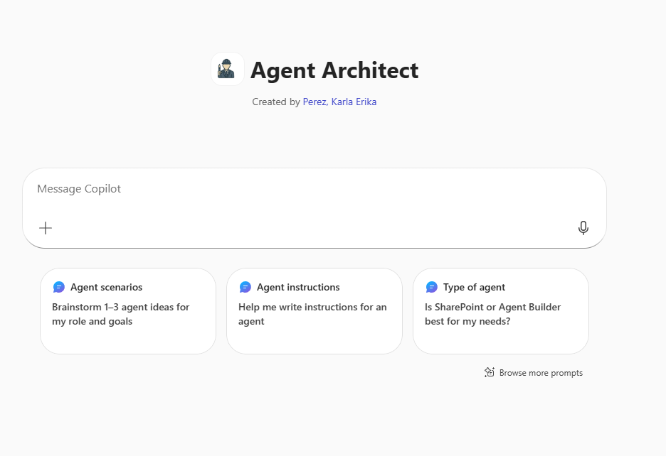

Build an agent that takes raw source and target schema documentation and helps analysts produce structured mapping artefacts in a fraction of the time. No more manual Excel comparisons.
On real migration projects — like Oracle to Azure — data mapping is one of the most time-consuming phases. Here's what analysts are actually dealing with.
A typical bank migration involves hundreds of source tables, each with dozens of columns. An analyst opens the source data dictionary in one window and the target schema spec in another — then manually compares them row by row in Excel. They look for renamed columns, data type mismatches, fields that exist in the source but not the target, and Oracle-specific quirks that need special handling (like DATE columns that secretly store timestamps, or amounts stored in pence not pounds). This takes days. It's error-prone. And the mapping document is usually out of date before the migration even starts.
Analysts spend hours flipping between two spreadsheets comparing column names, types and nullability — all in their head.
Oracle DATE stores time. Amounts are in pence. VARCHAR2 lengths are in bytes. These silent mismatches cause data corruption if missed.
Knowing which source fields to exclude and which new target fields to populate via ETL logic requires careful cross-referencing of multiple documents.
Capturing what's missing, what's changed, and what needs manual review — then communicating it clearly to the wider team — is slow and inconsistent.
Foreign key relationships mean tables must be loaded in the right sequence. Missing this causes load failures that take hours to diagnose.
Fields containing personal data need flagging before migration. Manual review misses them. The agent can systematically identify likely PII columns.
Paste in schema documentation and let the agent do the heavy analytical lifting. It won't connect directly to a database — but it will work with any schema documentation you can paste or describe.
Given source and target schemas, generate a structured mapping table showing what maps to what, including column renames and type changes.
Identify columns in the source with no target equivalent, columns in the target with no source feed, and fields marked as deprecated.
Flag Oracle-specific traps: DATE columns storing time, amounts in minor currency units, VARCHAR2 byte vs character lengths, and Y/N booleans needing conversion.
Suggest ETL transformation rules for each mapped column — divide by 100 for minor units, strip Oracle time from DATE fields, convert Y/N to boolean, and more.
Scan column names and descriptions to flag likely PII fields (names, emails, addresses, account numbers) that need a compliance review before migration.
Given FK relationships in the schema, suggest the correct table load sequence to avoid constraint violations during migration.
You have two files to work with — just like a real migration project. The source dictionary describes what exists in Oracle today. The target spec describes what it needs to become in Azure PostgreSQL. Your agent's job is to bridge them.
Oracle 12c schema export for First National Bank PLC. Three tables: CUSTOMER, ACCOUNT, TRANSACTION. Includes Oracle data types, nullability, business descriptions, sample values, and migration notes.
Azure PostgreSQL 15 target schema — deliberately incomplete and imperfect. Contains renamed columns, type changes, new fields with no source equivalent, and intentional gaps for your agent to find.
Open both files. Select a table (start with CUSTOMER). Copy the relevant rows from the source dictionary and paste them into Copilot. Then copy the target spec rows for the same table and paste those in too. Ask your agent to compare them, generate a mapping table, and flag any issues. The more specific your instructions, the better the output.
Watch the walkthrough video to see how to set up the agent in Copilot Studio, then use the prompt-writing guide below to configure it specifically for data mapping work.

Prompt Coach — your built-in prompt writing assistant

Agent Architect — helps you design and write agent instructions · Open Agent Architect →
The quality of your mapping output is entirely determined by how precisely you instruct the agent. A vague prompt gets a generic response. A specific, well-structured prompt gets a production-ready mapping artefact.
You are an expert data migration analyst supporting a large banking technology transformation project. We are migrating from Oracle 12c to Azure Database for PostgreSQL 15. Your job is to help me analyse source and target schema documentation and produce structured mapping artefacts. I will paste schema information from our data dictionary and target spec into this conversation — you must never try to connect to a database directly. WHEN I GIVE YOU SCHEMA DATA, PRODUCE THE FOLLOWING IN ORDER: 1. SOURCE-TO-TARGET MAPPING TABLE Format as a table with these columns: | Source Column | Source Type | Target Column | Target Type | Transformation Required | Status | Status values: - DIRECT MAP: column maps cleanly with no transformation - TRANSFORM: column maps but requires ETL logic (explain what) - NO TARGET: source column has no target equivalent (flag if deprecated or needs decision) - NEW FIELD: target column with no source — note how to populate - EXCLUDE: deprecated source column — do not migrate 2. ISSUES & RISKS LOG List all mapping issues in a table: | Issue | Severity (High/Medium/Low) | Column(s) Affected | Recommended Action | Always flag these as HIGH severity: - Oracle DATE columns that store time (must strip time component or convert to TIMESTAMP) - Amount/balance columns stored in minor currency units (pence/cents) — must divide by 100 - Y/N CHAR columns needing BOOLEAN conversion - VARCHAR2 lengths that may truncate in target - FK dependencies where referenced table may not exist yet 3. PII FLAGS List any columns likely to contain personal data: | Column | PII Category | Recommended Action | Categories: Name, Contact Details, Financial, Identity, Location ORACLE-SPECIFIC RULES I want you to always apply: - Oracle DATE = date + time. If target is DATE (not TIMESTAMP), flag as requiring time-strip - Oracle NUMBER without precision = integer equivalent - Oracle CHAR pads with spaces — note if target VARCHAR will behave differently - Y/N CHAR(1) → BOOLEAN (true/false) at target - Sequence-generated PKs: note that sequences must be re-seeded post-migration Always end with: "Mapping complete. [X] columns mapped, [Y] issues found, [Z] PII fields flagged. Ready for review."
"Here is the CUSTOMER table from our source data dictionary [paste rows]. Produce the source-to-target mapping table only."
"Here is the CUSTOMER source schema [paste] and the target spec [paste]. Produce the full mapping table, issues log, and PII flags."
"Review the ACCOUNT table source columns and identify every column that will require a transformation — especially amount fields and date fields."
"Which source columns have no mapping in the target spec? Which target columns have no source equivalent? List both."
"Given the FK relationships in these three tables, what is the correct load sequence for the migration? What would happen if we loaded in the wrong order?"
"The TRANSACTION table target spec is marked INCOMPLETE. Based on the source columns, suggest what the missing target columns should be."
Once mappings are confirmed, ask the agent to generate pseudocode or SQL snippets for each transformation rule — ready to hand to the engineering team.
Ask it to convert your issues log into a pre-migration checklist — ordered by priority — that the team can work through before go-live.
Paste in business requirements or compliance rules and ask the agent to check whether your mapping satisfies them — catching regulatory gaps early.
Fill in the form below to log the agent you built during today's session.